| Matrix name | Aligned logos | cor |
Ncor |
logoDP |
NIcor |
NsEucl |
SSD |
NSW |
rcor |
rNcor |
rlogoDP |
rNIcor |
rNsEucl |
rSSD |
rNSW |
rank_mean |
match_rank |
Aligned matrices |
|---|
| positions_6nt_m1_shift7 (positions_6nt_m1) |
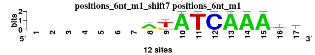 |
|
|
|
|
|
|
|
|
|
|
|
|
|
|
|
|
; positions_6nt_m1; m=0 (reference); ncol1=10; shift=7; ncol=17; -------rkATCAAAsd
; Alignment reference
a 0 0 0 0 0 0 0 8 0 12 0 0 12 12 12 0 4
c 0 0 0 0 0 0 0 1 0 0 0 12 0 0 0 3 0
g 0 0 0 0 0 0 0 3 4 0 0 0 0 0 0 7 3
t 0 0 0 0 0 0 0 0 8 0 12 0 0 0 0 2 5
|
| 6733_4euw_A_3D-footprint_20130124__shift10 (6733_4euw_A_3D-footprint_20130124_) |
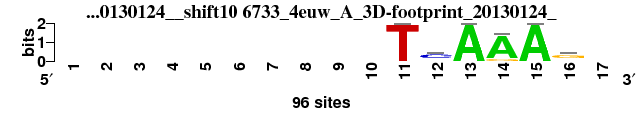 |
0.970 |
0.582 |
7.317 |
0.573 |
0.941 |
0.253 |
0.979 |
2 |
10 |
12 |
6 |
1 |
1 |
1 |
4.714 |
1 |
; positions_6nt_m1 versus 6733_4euw_A_3D-footprint_20130124_; m=1/51; ncol2=6; w=6; offset=3; strand=D; shift=10; score= 4.7143; ----------TcAAAg-
; cor=0.970; Ncor=0.582; logoDP=7.317; NIcor=0.573; NsEucl=0.941; SSD=0.253; NSW=0.979; rcor=2; rNcor=10; rlogoDP=12; rNIcor=6; rNsEucl=1; rSSD=1; rNSW=1; rank_mean=4.714; match_rank=1
a 0 0 0 0 0 0 0 0 0 0 0 12 96 84 96 12 0
c 0 0 0 0 0 0 0 0 0 0 0 60 0 0 0 12 0
g 0 0 0 0 0 0 0 0 0 0 0 12 0 12 0 60 0
t 0 0 0 0 0 0 0 0 0 0 96 12 0 0 0 12 0
|
| 1939_PB0082.1_JASPAR_CORE_2009__shift4 (1939_PB0082.1_JASPAR_CORE_2009_) |
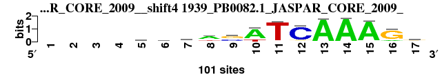 |
0.894 |
0.526 |
8.400 |
0.545 |
0.927 |
1.074 |
0.946 |
12 |
18 |
8 |
8 |
3 |
17 |
4 |
10.000 |
2 |
; positions_6nt_m1 versus 1939_PB0082.1_JASPAR_CORE_2009_; m=2/51; ncol2=17; w=10; offset=-3; strand=D; shift=4; score= 10; ----twwasATCAAAGg
; cor=0.894; Ncor=0.526; logoDP=8.400; NIcor=0.545; NsEucl=0.927; SSD=1.074; NSW=0.946; rcor=12; rNcor=18; rlogoDP=8; rNIcor=8; rNsEucl=3; rSSD=17; rNSW=4; rank_mean=10.000; match_rank=2
a 0 0 0 0 19 37 25 58 4 76 6 4 96 97 94 13 21
c 0 0 0 0 20 23 17 4 40 1 1 87 0 0 0 6 17
g 0 0 0 0 18 12 13 13 50 1 0 6 0 1 2 80 48
t 0 0 0 0 43 27 45 24 7 23 93 3 3 1 4 2 13
|
| 3755_UP00058_UniPROBE_20120919__shift4 (3755_UP00058_UniPROBE_20120919_) |
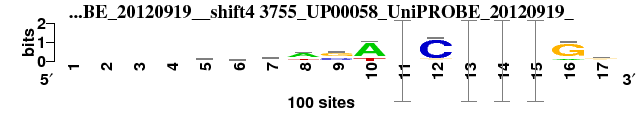 |
0.893 |
0.525 |
8.396 |
0.544 |
0.926 |
1.087 |
0.946 |
14 |
19 |
9 |
9 |
6 |
19 |
6 |
11.714 |
3 |
; positions_6nt_m1 versus 3755_UP00058_UniPROBE_20120919_; m=3/51; ncol2=17; w=10; offset=-3; strand=D; shift=4; score=11.7143; ----twwwsATCAAAGg
; cor=0.893; Ncor=0.525; logoDP=8.396; NIcor=0.544; NsEucl=0.926; SSD=1.087; NSW=0.946; rcor=14; rNcor=19; rlogoDP=9; rNIcor=9; rNsEucl=6; rSSD=19; rNSW=6; rank_mean=11.714; match_rank=3
a 0 0 0 0 19 37 25 58 4 75 0.06 4 0.96 0.97 0.94 12 21
c 0 0 0 0 20 23 17 4 40 1 0.01 87 0 0 0 6 17
g 0 0 0 0 18 13 13 13 49 1 0 6 0 0.01 0.02 80 49
t 0 0 0 0 43 27 45 25 7 23 0.93 3 0.03 0.01 0.04 2 13
|
| 5900_Tcf7_DBD_HumanTF_1.0__shift5 (5900_Tcf7_DBD_HumanTF_1.0_) |
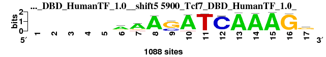 |
0.885 |
0.737 |
10.861 |
0.744 |
0.919 |
1.320 |
0.934 |
19 |
4 |
2 |
2 |
13 |
32 |
19 |
13.000 |
4 |
; positions_6nt_m1 versus 5900_Tcf7_DBD_HumanTF_1.0_; m=4/51; ncol2=12; w=10; offset=-2; strand=D; shift=5; score= 13; -----aAASATCAAAGg
; cor=0.885; Ncor=0.737; logoDP=10.861; NIcor=0.744; NsEucl=0.919; SSD=1.320; NSW=0.934; rcor=19; rNcor=4; rlogoDP=2; rNIcor=2; rNsEucl=13; rSSD=32; rNSW=19; rank_mean=13.000; match_rank=4
a 0 0 0 0 0 552 791 906 5 912 0 21 919 921 915 32 159
c 0 0 0 0 0 68 31 4 277 2 5 1018 0 6 0 0 146
g 0 0 0 0 0 117 144 27 744 4 18 28 5 10 0 846 600
t 0 0 0 0 0 97 111 31 6 42 874 21 6 3 4 0 89
|
| 5494_LEF1_DBD_HumanTF_1.0__shift5 (5494_LEF1_DBD_HumanTF_1.0_) |
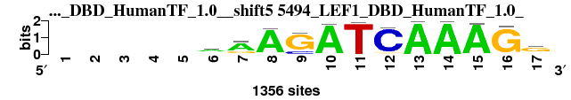 |
0.885 |
0.590 |
11.169 |
0.590 |
0.918 |
1.343 |
0.933 |
18 |
8 |
1 |
5 |
14 |
34 |
20 |
14.286 |
5 |
; positions_6nt_m1 versus 5494_LEF1_DBD_HumanTF_1.0_; m=5/51; ncol2=15; w=10; offset=-2; strand=D; shift=5; score=14.2857; -----aAAGATCAAAGg
; cor=0.885; Ncor=0.590; logoDP=11.169; NIcor=0.590; NsEucl=0.918; SSD=1.343; NSW=0.933; rcor=18; rNcor=8; rlogoDP=1; rNIcor=5; rNsEucl=14; rSSD=34; rNSW=20; rank_mean=14.286; match_rank=5
a 0 0 0 0 0 601 655 697 5 699 9 14 711 709 712 33 197
c 0 0 0 0 0 139 26 7 242 0 3 935 0 0 0 24 184
g 0 0 0 0 0 215 207 34 1053 4 0 49 0 4 13 1068 851
t 0 0 0 0 0 138 63 14 3 15 898 5 4 0 4 0 124
|
| 7669_TF7L2_f1_HOCOMOCO_v9__shift7 (7669_TF7L2_f1_HOCOMOCO_v9_) |
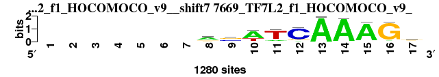 |
0.868 |
0.789 |
7.297 |
0.802 |
0.919 |
1.318 |
0.934 |
25 |
1 |
13 |
1 |
12 |
31 |
18 |
14.429 |
6 |
; positions_6nt_m1 versus 7669_TF7L2_f1_HOCOMOCO_v9_; m=6/51; ncol2=11; w=10; offset=0; strand=D; shift=7; score=14.4286; -------aswTCAAAGg
; cor=0.868; Ncor=0.789; logoDP=7.297; NIcor=0.802; NsEucl=0.919; SSD=1.318; NSW=0.934; rcor=25; rNcor=1; rlogoDP=13; rNIcor=1; rNsEucl=12; rSSD=31; rNSW=18; rank_mean=14.429; match_rank=6
a 0 0 0 0 0 0 0 727 128 854 206 98 1270 1244 1178 60 317
c 0 0 0 0 0 0 0 153 510 38 23 1047 7 18 0 27 314
g 0 0 0 0 0 0 0 286 557 12 80 124 0 17 58 1187 549
t 0 0 0 0 0 0 0 114 85 376 971 11 3 1 44 6 100
|
| 5863_TCF7L1_full_HumanTF_1.0__shift5 (5863_TCF7L1_full_HumanTF_1.0_) |
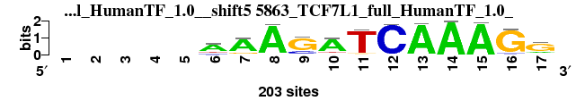 |
0.876 |
0.730 |
10.106 |
0.717 |
0.917 |
1.394 |
0.930 |
23 |
5 |
4 |
3 |
16 |
35 |
21 |
15.286 |
7 |
; positions_6nt_m1 versus 5863_TCF7L1_full_HumanTF_1.0_; m=7/51; ncol2=12; w=10; offset=-2; strand=D; shift=5; score=15.2857; -----AAAGATCAAAGG
; cor=0.876; Ncor=0.730; logoDP=10.106; NIcor=0.717; NsEucl=0.917; SSD=1.394; NSW=0.930; rcor=23; rNcor=5; rlogoDP=4; rNIcor=3; rNsEucl=16; rSSD=35; rNSW=21; rank_mean=15.286; match_rank=7
a 0 0 0 0 0 109 159 159 0 159 0 5 159 159 159 0 28
c 0 0 0 0 0 20 7 0 33 9 6 159 2 0 0 9 9
g 0 0 0 0 0 6 30 0 126 13 9 0 1 0 2 159 113
t 0 0 0 0 0 24 7 5 6 18 159 0 0 0 0 5 9
|
| 3751_UP00054_UniPROBE_20120919__shift4 (3751_UP00054_UniPROBE_20120919_) |
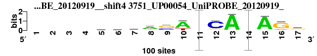 |
0.883 |
0.520 |
7.753 |
0.540 |
0.923 |
1.175 |
0.941 |
20 |
22 |
10 |
11 |
10 |
24 |
13 |
15.714 |
8 |
; positions_6nt_m1 versus 3751_UP00054_UniPROBE_20120919_; m=8/51; ncol2=17; w=10; offset=-3; strand=D; shift=4; score=15.7143; ----twwasWTCAAAGg
; cor=0.883; Ncor=0.520; logoDP=7.753; NIcor=0.540; NsEucl=0.923; SSD=1.175; NSW=0.941; rcor=20; rNcor=22; rlogoDP=10; rNIcor=11; rNsEucl=10; rSSD=24; rNSW=13; rank_mean=15.714; match_rank=8
a 0 0 0 0 17 34 30 60 4 72 0.07 4 96 0.96 93 16 23
c 0 0 0 0 20 23 17 5 38 1 0.01 82 1 0 1 6 15
g 0 0 0 0 22 14 14 14 53 1 0 10 0 0.02 2 76 53
t 0 0 0 0 41 29 39 21 5 26 0.92 4 3 0.02 4 2 9
|
| 1940_PB0083.1_JASPAR_CORE_2009__shift4 (1940_PB0083.1_JASPAR_CORE_2009_) |
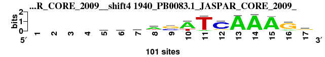 |
0.883 |
0.520 |
7.643 |
0.540 |
0.923 |
1.175 |
0.941 |
21 |
23 |
11 |
10 |
11 |
25 |
14 |
16.429 |
9 |
; positions_6nt_m1 versus 1940_PB0083.1_JASPAR_CORE_2009_; m=9/51; ncol2=17; w=10; offset=-3; strand=D; shift=4; score=16.4286; ----twwasWTCAAAGg
; cor=0.883; Ncor=0.520; logoDP=7.643; NIcor=0.540; NsEucl=0.923; SSD=1.175; NSW=0.941; rcor=21; rNcor=23; rlogoDP=11; rNIcor=10; rNsEucl=11; rSSD=25; rNSW=14; rank_mean=16.429; match_rank=9
a 0 0 0 0 17 34 30 60 4 73 7 5 96 96 94 16 23
c 0 0 0 0 20 23 17 5 38 1 1 82 1 0 1 6 15
g 0 0 0 0 22 14 14 13 53 1 0 10 1 2 2 76 52
t 0 0 0 0 41 29 38 21 5 26 92 4 3 2 4 2 9
|
| 1795_MA0237.1_JASPAR_CORE_2009__rc_shift8 (1795_MA0237.1_JASPAR_CORE_2009__rc) |
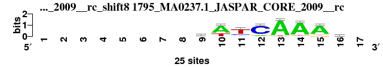 |
0.930 |
0.744 |
2.118 |
0.115 |
0.917 |
0.872 |
0.945 |
4 |
3 |
41 |
32 |
15 |
13 |
7 |
16.429 |
10 |
; positions_6nt_m1 versus 1795_MA0237.1_JASPAR_CORE_2009__rc; m=10/51; ncol2=8; w=8; offset=1; strand=R; shift=8; score=16.4286; --------kWTCAAAr-
; cor=0.930; Ncor=0.744; logoDP=2.118; NIcor=0.115; NsEucl=0.917; SSD=0.872; NSW=0.945; rcor=4; rNcor=3; rlogoDP=41; rNIcor=32; rNsEucl=15; rSSD=13; rNSW=7; rank_mean=16.429; match_rank=10
a 0 0 0 0 0 0 0 0 4 17 3 3 23 22 20 8 0
c 0 0 0 0 0 0 0 0 3 0 5 20 0 1 0 3 0
g 0 0 0 0 0 0 0 0 11 0 0 2 0 0 3 10 0
t 0 0 0 0 0 0 0 0 7 8 17 0 2 2 2 4 0
|
| 1804_MA0246.1_JASPAR_CORE_2009__rc_shift7 (1804_MA0246.1_JASPAR_CORE_2009__rc) |
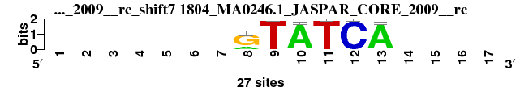 |
0.910 |
0.546 |
3.914 |
0.146 |
0.902 |
0.694 |
0.942 |
6 |
13 |
32 |
30 |
18 |
7 |
12 |
16.857 |
11 |
; positions_6nt_m1 versus 1804_MA0246.1_JASPAR_CORE_2009__rc; m=11/51; ncol2=6; w=6; offset=0; strand=R; shift=7; score=16.8571; -------GTATCA----
; cor=0.910; Ncor=0.546; logoDP=3.914; NIcor=0.146; NsEucl=0.902; SSD=0.694; NSW=0.942; rcor=6; rNcor=13; rlogoDP=32; rNIcor=30; rNsEucl=18; rSSD=7; rNSW=12; rank_mean=16.857; match_rank=11
a 0 0 0 0 0 0 0 3 0 26 0 0 26 0 0 0 0
c 0 0 0 0 0 0 0 0 0 1 0 27 1 0 0 0 0
g 0 0 0 0 0 0 0 10 0 0 0 0 0 0 0 0 0
t 0 0 0 0 0 0 0 0 27 0 27 0 0 0 0 0 0
|
| 2760_PF0073.1_JASPAR_CORE_2009__rc_shift10 (2760_PF0073.1_JASPAR_CORE_2009__rc) |
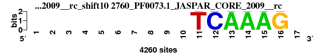 |
0.971 |
0.583 |
0.000 |
-0.189 |
0.939 |
0.264 |
0.978 |
1 |
9 |
51 |
51 |
2 |
2 |
2 |
16.857 |
12 |
; positions_6nt_m1 versus 2760_PF0073.1_JASPAR_CORE_2009__rc; m=12/51; ncol2=6; w=6; offset=3; strand=R; shift=10; score=16.8571; ----------TCAAAG-
; cor=0.971; Ncor=0.583; logoDP=0.000; NIcor=-0.189; NsEucl=0.939; SSD=0.264; NSW=0.978; rcor=1; rNcor=9; rlogoDP=51; rNIcor=51; rNsEucl=2; rSSD=2; rNSW=2; rank_mean=16.857; match_rank=12
a 0 0 0 0 0 0 0 0 0 0 0 0 4260 4260 4260 0 0
c 0 0 0 0 0 0 0 0 0 0 0 4260 0 0 0 0 0
g 0 0 0 0 0 0 0 0 0 0 0 0 0 0 0 4260 0
t 0 0 0 0 0 0 0 0 0 0 4260 0 0 0 0 0 0
|
| 2526_MA0151.1_JASPAR_CORE_2009__shift9 (2526_MA0151.1_JASPAR_CORE_2009_) |
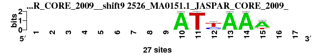 |
0.887 |
0.532 |
8.694 |
0.516 |
0.885 |
0.960 |
0.920 |
17 |
15 |
6 |
13 |
30 |
15 |
26 |
17.429 |
13 |
; positions_6nt_m1 versus 2526_MA0151.1_JASPAR_CORE_2009_; m=13/51; ncol2=6; w=6; offset=2; strand=D; shift=9; score=17.4286; ---------ATyAAA--
; cor=0.887; Ncor=0.532; logoDP=8.694; NIcor=0.516; NsEucl=0.885; SSD=0.960; NSW=0.920; rcor=17; rNcor=15; rlogoDP=6; rNIcor=13; rNsEucl=30; rSSD=15; rNSW=26; rank_mean=17.429; match_rank=13
a 0 0 0 0 0 0 0 0 0 27 0 1 27 27 20 0 0
c 0 0 0 0 0 0 0 0 0 0 0 9 0 0 0 0 0
g 0 0 0 0 0 0 0 0 0 0 0 0 0 0 1 0 0
t 0 0 0 0 0 0 0 0 0 0 27 17 0 0 6 0 0
|
| 3780_UP00083_UniPROBE_20120919__rc_shift4 (3780_UP00083_UniPROBE_20120919__rc) |
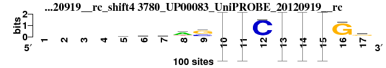 |
0.896 |
0.527 |
3.381 |
0.051 |
0.927 |
1.078 |
0.946 |
9 |
16 |
36 |
36 |
5 |
18 |
5 |
17.857 |
14 |
; positions_6nt_m1 versus 3780_UP00083_UniPROBE_20120919__rc; m=14/51; ncol2=17; w=10; offset=-3; strand=R; shift=4; score=17.8571; ----tawasATCAAAGg
; cor=0.896; Ncor=0.527; logoDP=3.381; NIcor=0.051; NsEucl=0.927; SSD=1.078; NSW=0.946; rcor=9; rNcor=16; rlogoDP=36; rNIcor=36; rNsEucl=5; rSSD=18; rNSW=5; rank_mean=17.857; match_rank=14
a 0 0 0 0 17 39 25 59 4 0.89 0.05 3 0.97 0.98 0.96 7 20
c 0 0 0 0 23 24 22 4 35 0 0 93 0 0 0 3 18
g 0 0 0 0 24 14 17 15 57 0 0 3 0 0.01 0.02 88 53
t 0 0 0 0 36 23 36 22 4 0.11 0.95 1 0.03 0.01 0.02 2 9
|
| 1758_MA0199.1_JASPAR_CORE_2009__rc_shift8 (1758_MA0199.1_JASPAR_CORE_2009__rc) |
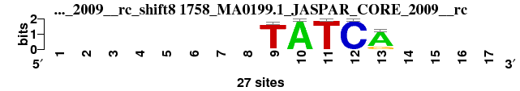 |
0.960 |
0.480 |
2.009 |
0.036 |
0.927 |
0.269 |
0.973 |
3 |
32 |
42 |
40 |
4 |
3 |
3 |
18.143 |
15 |
; positions_6nt_m1 versus 1758_MA0199.1_JASPAR_CORE_2009__rc; m=15/51; ncol2=5; w=5; offset=1; strand=R; shift=8; score=18.1429; --------TATCA----
; cor=0.960; Ncor=0.480; logoDP=2.009; NIcor=0.036; NsEucl=0.927; SSD=0.269; NSW=0.973; rcor=3; rNcor=32; rlogoDP=42; rNIcor=40; rNsEucl=4; rSSD=3; rNSW=3; rank_mean=18.143; match_rank=15
a 0 0 0 0 0 0 0 0 0 27 0 0 22 0 0 0 0
c 0 0 0 0 0 0 0 0 1 0 0 27 0 0 0 0 0
g 0 0 0 0 0 0 0 0 0 0 0 0 5 0 0 0 0
t 0 0 0 0 0 0 0 0 26 0 27 0 0 0 0 0 0
|
| 2684_PB0084.1_JASPAR_CORE_2009__rc_shift4 (2684_PB0084.1_JASPAR_CORE_2009__rc) |
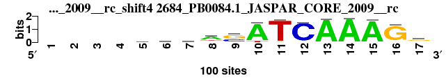 |
0.895 |
0.526 |
3.370 |
0.051 |
0.926 |
1.092 |
0.945 |
10 |
17 |
37 |
35 |
7 |
20 |
8 |
19.143 |
16 |
; positions_6nt_m1 versus 2684_PB0084.1_JASPAR_CORE_2009__rc; m=16/51; ncol2=17; w=10; offset=-3; strand=R; shift=4; score=19.1429; ----tawasATCAAAGg
; cor=0.895; Ncor=0.526; logoDP=3.370; NIcor=0.051; NsEucl=0.926; SSD=1.092; NSW=0.945; rcor=10; rNcor=17; rlogoDP=37; rNIcor=35; rNsEucl=7; rSSD=20; rNSW=8; rank_mean=19.143; match_rank=16
a 0 0 0 0 17 39 25 59 3 89 5 3 97 98 96 7 20
c 0 0 0 0 23 23 22 4 35 0 0 93 0 0 0 3 18
g 0 0 0 0 24 14 17 14 57 0 0 3 0 1 2 88 53
t 0 0 0 0 35 23 36 22 4 11 95 1 3 1 2 1 9
|
| 6289_1qrv_A_3D-footprint_20130124__shift6 (6289_1qrv_A_3D-footprint_20130124_) |
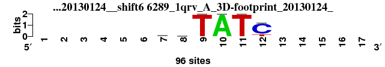 |
0.897 |
0.408 |
5.451 |
0.403 |
0.893 |
0.569 |
0.943 |
8 |
47 |
22 |
24 |
23 |
4 |
9 |
19.571 |
17 |
; positions_6nt_m1 versus 6289_1qrv_A_3D-footprint_20130124_; m=17/51; ncol2=6; w=5; offset=-1; strand=D; shift=6; score=19.5714; ------gnTATC-----
; cor=0.897; Ncor=0.408; logoDP=5.451; NIcor=0.403; NsEucl=0.893; SSD=0.569; NSW=0.943; rcor=8; rNcor=47; rlogoDP=22; rNIcor=24; rNsEucl=23; rSSD=4; rNSW=9; rank_mean=19.571; match_rank=17
a 0 0 0 0 0 0 20 24 0 96 0 0 0 0 0 0 0
c 0 0 0 0 0 0 19 24 0 0 0 76 0 0 0 0 0
g 0 0 0 0 0 0 38 24 0 0 0 1 0 0 0 0 0
t 0 0 0 0 0 0 19 24 96 0 96 19 0 0 0 0 0
|
| 2415_MA0021.1_JASPAR_CORE_2009__shift12 (2415_MA0021.1_JASPAR_CORE_2009_) |
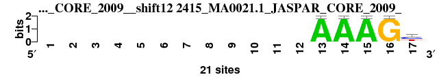 |
0.897 |
0.408 |
6.134 |
0.421 |
0.889 |
0.615 |
0.939 |
7 |
46 |
16 |
23 |
26 |
5 |
16 |
19.857 |
18 |
; positions_6nt_m1 versus 2415_MA0021.1_JASPAR_CORE_2009_; m=18/51; ncol2=6; w=5; offset=5; strand=D; shift=12; score=19.8571; ------------AAAGy
; cor=0.897; Ncor=0.408; logoDP=6.134; NIcor=0.421; NsEucl=0.889; SSD=0.615; NSW=0.939; rcor=7; rNcor=46; rlogoDP=16; rNIcor=23; rNsEucl=26; rSSD=5; rNSW=16; rank_mean=19.857; match_rank=18
a 0 0 0 0 0 0 0 0 0 0 0 0 21 21 21 0 0
c 0 0 0 0 0 0 0 0 0 0 0 0 0 0 0 0 10
g 0 0 0 0 0 0 0 0 0 0 0 0 0 0 0 21 3
t 0 0 0 0 0 0 0 0 0 0 0 0 0 0 0 0 8
|
| 7482_LEF1_f1_HOCOMOCO_v9__rc_shift9 (7482_LEF1_f1_HOCOMOCO_v9__rc) |
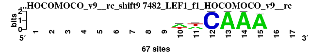 |
0.917 |
0.550 |
2.545 |
0.030 |
0.900 |
0.726 |
0.939 |
5 |
12 |
40 |
41 |
19 |
9 |
15 |
20.143 |
19 |
; positions_6nt_m1 versus 7482_LEF1_f1_HOCOMOCO_v9__rc; m=19/51; ncol2=6; w=6; offset=2; strand=R; shift=9; score=20.1429; ---------wwCAAA--
; cor=0.917; Ncor=0.550; logoDP=2.545; NIcor=0.030; NsEucl=0.900; SSD=0.726; NSW=0.939; rcor=5; rNcor=12; rlogoDP=40; rNIcor=41; rNsEucl=19; rSSD=9; rNSW=15; rank_mean=20.143; match_rank=19
a 0 0 0 0 0 0 0 0 0 38 28 0 67 67 65 0 0
c 0 0 0 0 0 0 0 0 0 3 0 67 0 0 0 0 0
g 0 0 0 0 0 0 0 0 0 2 4 0 0 0 1 0 0
t 0 0 0 0 0 0 0 0 0 24 35 0 0 0 1 0 0
|
| 7627_SOX10_si_HOCOMOCO_v9__shift11 (7627_SOX10_si_HOCOMOCO_v9_) |
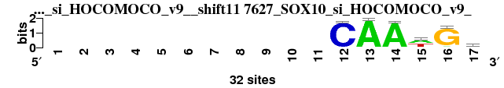 |
0.863 |
0.518 |
5.805 |
0.510 |
0.891 |
0.858 |
0.929 |
26 |
25 |
20 |
14 |
25 |
12 |
23 |
20.714 |
20 |
; positions_6nt_m1 versus 7627_SOX10_si_HOCOMOCO_v9_; m=20/51; ncol2=6; w=6; offset=4; strand=D; shift=11; score=20.7143; -----------CAAwGr
; cor=0.863; Ncor=0.518; logoDP=5.805; NIcor=0.510; NsEucl=0.891; SSD=0.858; NSW=0.929; rcor=26; rNcor=25; rlogoDP=20; rNIcor=14; rNsEucl=25; rSSD=12; rNSW=23; rank_mean=20.714; match_rank=20
a 0 0 0 0 0 0 0 0 0 0 0 0 32 31 15 2 13
c 0 0 0 0 0 0 0 0 0 0 0 31 0 0 0 0 7
g 0 0 0 0 0 0 0 0 0 0 0 0 0 0 3 29 10
t 0 0 0 0 0 0 0 0 0 0 0 1 0 1 14 1 2
|
| 3764_UP00067_UniPROBE_20120919__rc_shift4 (3764_UP00067_UniPROBE_20120919__rc) |
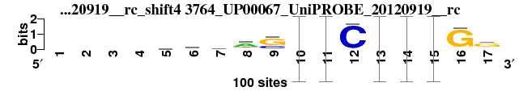 |
0.891 |
0.524 |
3.477 |
0.048 |
0.924 |
1.154 |
0.942 |
15 |
20 |
35 |
37 |
8 |
22 |
10 |
21.000 |
21 |
; positions_6nt_m1 versus 3764_UP00067_UniPROBE_20120919__rc; m=21/51; ncol2=17; w=10; offset=-3; strand=R; shift=4; score= 21; ----kwwasATCAAAGg
; cor=0.891; Ncor=0.524; logoDP=3.477; NIcor=0.048; NsEucl=0.924; SSD=1.154; NSW=0.942; rcor=15; rNcor=20; rlogoDP=35; rNIcor=37; rNsEucl=8; rSSD=22; rNSW=10; rank_mean=21.000; match_rank=21
a 0 0 0 0 19 40 26 62 2 0.92 0.03 2 0.97 0.99 0.97 5 17
c 0 0 0 0 22 17 22 6 28 0 0 95 0 0 0 4 14
g 0 0 0 0 34 15 17 12 67 0 0 3 0 0.01 0.02 90 62
t 0 0 0 0 25 28 35 20 3 0.08 0.97 0 0.02 0.01 0.02 1 7
|
| 1904_PB0040.1_JASPAR_CORE_2009__rc_shift4 (1904_PB0040.1_JASPAR_CORE_2009__rc) |
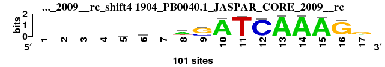 |
0.891 |
0.524 |
3.492 |
0.046 |
0.924 |
1.157 |
0.942 |
16 |
21 |
34 |
38 |
9 |
23 |
11 |
21.714 |
22 |
; positions_6nt_m1 versus 1904_PB0040.1_JASPAR_CORE_2009__rc; m=22/51; ncol2=17; w=10; offset=-3; strand=R; shift=4; score=21.7143; ----kwwasATCAAAGg
; cor=0.891; Ncor=0.524; logoDP=3.492; NIcor=0.046; NsEucl=0.924; SSD=1.157; NSW=0.942; rcor=16; rNcor=21; rlogoDP=34; rNIcor=38; rNsEucl=9; rSSD=23; rNSW=11; rank_mean=21.714; match_rank=22
a 0 0 0 0 19 40 27 62 2 92 3 2 97 99 97 5 17
c 0 0 0 0 22 17 22 6 28 0 0 95 0 0 0 4 14
g 0 0 0 0 34 15 17 12 68 0 0 3 0 1 2 91 62
t 0 0 0 0 25 28 35 20 3 8 97 1 2 1 2 1 7
|
| 7260_RVE1_2_ArabidopsisPBM_20140210__shift5 (7260_RVE1_2_ArabidopsisPBM_20140210_) |
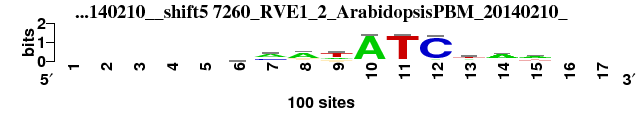 |
0.861 |
0.574 |
4.351 |
0.556 |
0.894 |
1.448 |
0.909 |
27 |
11 |
28 |
7 |
22 |
36 |
29 |
22.857 |
23 |
; positions_6nt_m1 versus 7260_RVE1_2_ArabidopsisPBM_20140210_; m=23/51; ncol2=10; w=8; offset=-2; strand=D; shift=5; score=22.8571; -----smatATCwaw--
; cor=0.861; Ncor=0.574; logoDP=4.351; NIcor=0.556; NsEucl=0.894; SSD=1.448; NSW=0.909; rcor=27; rNcor=11; rlogoDP=28; rNIcor=7; rNsEucl=22; rSSD=36; rNSW=29; rank_mean=22.857; match_rank=23
a 0 0 0 0 0 20 55 65 23 91 2 6 30 61 50 0 0
c 0 0 0 0 0 31 30 9 3 4 3 89 20 16 16 0 0
g 0 0 0 0 0 29 4 16 15 3 4 4 5 13 6 0 0
t 0 0 0 0 0 20 11 10 59 2 91 1 45 10 28 0 0
|
| 2455_MA0064.1_JASPAR_CORE_2009__shift12 (2455_MA0064.1_JASPAR_CORE_2009_) |
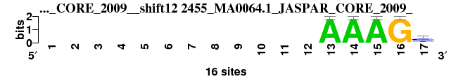 |
0.883 |
0.441 |
6.129 |
0.457 |
0.882 |
0.700 |
0.930 |
22 |
40 |
18 |
20 |
33 |
8 |
22 |
23.286 |
24 |
; positions_6nt_m1 versus 2455_MA0064.1_JASPAR_CORE_2009_; m=24/51; ncol2=5; w=5; offset=5; strand=D; shift=12; score=23.2857; ------------AAAGy
; cor=0.883; Ncor=0.441; logoDP=6.129; NIcor=0.457; NsEucl=0.882; SSD=0.700; NSW=0.930; rcor=22; rNcor=40; rlogoDP=18; rNIcor=20; rNsEucl=33; rSSD=8; rNSW=22; rank_mean=23.286; match_rank=24
a 0 0 0 0 0 0 0 0 0 0 0 0 16 16 16 0 1
c 0 0 0 0 0 0 0 0 0 0 0 0 0 0 0 0 9
g 0 0 0 0 0 0 0 0 0 0 0 0 0 0 0 16 1
t 0 0 0 0 0 0 0 0 0 0 0 0 0 0 0 0 5
|
| 7663_TCF7_f1_HOCOMOCO_v9__shift8 (7663_TCF7_f1_HOCOMOCO_v9_) |
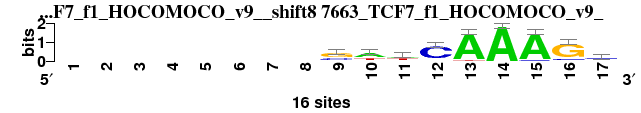 |
0.802 |
0.601 |
6.511 |
0.603 |
0.894 |
1.818 |
0.899 |
42 |
7 |
14 |
4 |
21 |
42 |
35 |
23.571 |
25 |
; positions_6nt_m1 versus 7663_TCF7_f1_HOCOMOCO_v9_; m=25/51; ncol2=11; w=9; offset=1; strand=D; shift=8; score=23.5714; --------swwCAAAGs
; cor=0.802; Ncor=0.601; logoDP=6.511; NIcor=0.603; NsEucl=0.894; SSD=1.818; NSW=0.899; rcor=42; rNcor=7; rlogoDP=14; rNIcor=4; rNsEucl=21; rSSD=42; rNSW=35; rank_mean=23.571; match_rank=25
a 0 0 0 0 0 0 0 0 0 9 7 1 15 16 15 0 1
c 0 0 0 0 0 0 0 0 5 0 1 13 0 0 1 2 8
g 0 0 0 0 0 0 0 0 9 2 1 1 0 0 0 13 5
t 0 0 0 0 0 0 0 0 2 5 7 1 1 0 0 1 2
|
| 2445_MA0053.1_JASPAR_CORE_2009__shift12 (2445_MA0053.1_JASPAR_CORE_2009_) |
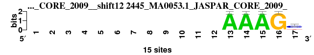 |
0.875 |
0.437 |
6.131 |
0.453 |
0.877 |
0.751 |
0.925 |
24 |
42 |
17 |
22 |
35 |
10 |
24 |
24.857 |
26 |
; positions_6nt_m1 versus 2445_MA0053.1_JASPAR_CORE_2009_; m=26/51; ncol2=5; w=5; offset=5; strand=D; shift=12; score=24.8571; ------------AAAGc
; cor=0.875; Ncor=0.437; logoDP=6.131; NIcor=0.453; NsEucl=0.877; SSD=0.751; NSW=0.925; rcor=24; rNcor=42; rlogoDP=17; rNIcor=22; rNsEucl=35; rSSD=10; rNSW=24; rank_mean=24.857; match_rank=26
a 0 0 0 0 0 0 0 0 0 0 0 0 15 15 15 0 3
c 0 0 0 0 0 0 0 0 0 0 0 0 0 0 0 0 9
g 0 0 0 0 0 0 0 0 0 0 0 0 0 0 0 15 0
t 0 0 0 0 0 0 0 0 0 0 0 0 0 0 0 0 3
|
| 1781_MA0222.1_JASPAR_CORE_2009__rc_shift8 (1781_MA0222.1_JASPAR_CORE_2009__rc) |
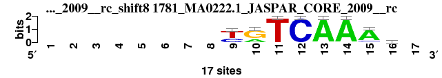 |
0.839 |
0.672 |
3.975 |
0.139 |
0.892 |
1.494 |
0.907 |
30 |
6 |
30 |
31 |
24 |
37 |
30 |
26.857 |
27 |
; positions_6nt_m1 versus 1781_MA0222.1_JASPAR_CORE_2009__rc; m=27/51; ncol2=8; w=8; offset=1; strand=R; shift=8; score=26.8571; --------yRTCAAAa-
; cor=0.839; Ncor=0.672; logoDP=3.975; NIcor=0.139; NsEucl=0.892; SSD=1.494; NSW=0.907; rcor=30; rNcor=6; rlogoDP=30; rNIcor=31; rNsEucl=24; rSSD=37; rNSW=30; rank_mean=26.857; match_rank=27
a 0 0 0 0 0 0 0 0 0 5 0 0 17 17 14 5 0
c 0 0 0 0 0 0 0 0 6 0 0 17 0 0 2 4 0
g 0 0 0 0 0 0 0 0 0 12 0 0 0 0 0 4 0
t 0 0 0 0 0 0 0 0 11 0 17 0 0 0 1 4 0
|
| 2704_PF0017.1_JASPAR_CORE_2009__rc_shift12 (2704_PF0017.1_JASPAR_CORE_2009__rc) |
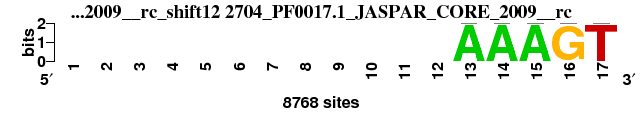 |
0.893 |
0.406 |
4.121 |
0.180 |
0.875 |
0.778 |
0.922 |
13 |
50 |
29 |
28 |
36 |
11 |
25 |
27.429 |
28 |
; positions_6nt_m1 versus 2704_PF0017.1_JASPAR_CORE_2009__rc; m=28/51; ncol2=6; w=5; offset=5; strand=R; shift=12; score=27.4286; ------------AAAGT
; cor=0.893; Ncor=0.406; logoDP=4.121; NIcor=0.180; NsEucl=0.875; SSD=0.778; NSW=0.922; rcor=13; rNcor=50; rlogoDP=29; rNIcor=28; rNsEucl=36; rSSD=11; rNSW=25; rank_mean=27.429; match_rank=28
a 0 0 0 0 0 0 0 0 0 0 0 0 8768 8768 8768 0 0
c 0 0 0 0 0 0 0 0 0 0 0 0 0 0 0 0 0
g 0 0 0 0 0 0 0 0 0 0 0 0 0 0 0 8768 0
t 0 0 0 0 0 0 0 0 0 0 0 0 0 0 0 0 8768
|
| 4976_pan_DrosophilaTF_1.1__rc_shift6 (4976_pan_DrosophilaTF_1.1__rc) |
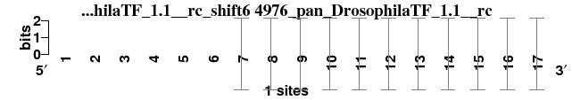 |
0.842 |
0.766 |
4.878 |
0.093 |
0.896 |
2.181 |
0.891 |
29 |
2 |
24 |
33 |
20 |
47 |
38 |
27.571 |
29 |
; positions_6nt_m1 versus 4976_pan_DrosophilaTF_1.1__rc; m=29/51; ncol2=11; w=10; offset=-1; strand=R; shift=6; score=27.5714; ------AAGATCAAAGG
; cor=0.842; Ncor=0.766; logoDP=4.878; NIcor=0.093; NsEucl=0.896; SSD=2.181; NSW=0.891; rcor=29; rNcor=2; rlogoDP=24; rNIcor=33; rNsEucl=20; rSSD=47; rNSW=38; rank_mean=27.571; match_rank=29
a 0 0 0 0 0 0 1 1 0 1 0 0 1 1 1 0 0
c 0 0 0 0 0 0 0 0 0 0 0 1 0 0 0 0 0
g 0 0 0 0 0 0 0 0 1 0 0 0 0 0 0 1 1
t 0 0 0 0 0 0 0 0 0 0 1 0 0 0 0 0 0
|
| 6387_2a07_K_3D-footprint_20130124__rc_shift11 (6387_2a07_K_3D-footprint_20130124__rc) |
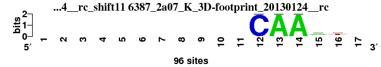 |
0.894 |
0.447 |
0.438 |
-0.080 |
0.887 |
0.638 |
0.936 |
11 |
39 |
47 |
45 |
29 |
6 |
17 |
27.714 |
30 |
; positions_6nt_m1 versus 6387_2a07_K_3D-footprint_20130124__rc; m=30/51; ncol2=5; w=5; offset=4; strand=R; shift=11; score=27.7143; -----------CAAat-
; cor=0.894; Ncor=0.447; logoDP=0.438; NIcor=-0.080; NsEucl=0.887; SSD=0.638; NSW=0.936; rcor=11; rNcor=39; rlogoDP=47; rNIcor=45; rNsEucl=29; rSSD=6; rNSW=17; rank_mean=27.714; match_rank=30
a 0 0 0 0 0 0 0 0 0 0 0 0 96 96 54 13 0
c 0 0 0 0 0 0 0 0 0 0 0 96 0 0 13 16 0
g 0 0 0 0 0 0 0 0 0 0 0 0 0 0 13 13 0
t 0 0 0 0 0 0 0 0 0 0 0 0 0 0 16 54 0
|
| 6344_1vtn_C_3D-footprint_20130124__shift5 (6344_1vtn_C_3D-footprint_20130124_) |
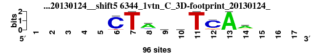 |
0.836 |
0.488 |
5.176 |
0.475 |
0.883 |
1.333 |
0.905 |
32 |
28 |
23 |
18 |
31 |
33 |
31 |
28.000 |
31 |
; positions_6nt_m1 versus 6344_1vtn_C_3D-footprint_20130124_; m=31/51; ncol2=9; w=7; offset=-2; strand=D; shift=5; score= 28; -----CTAnnTCAa---
; cor=0.836; Ncor=0.488; logoDP=5.176; NIcor=0.475; NsEucl=0.883; SSD=1.333; NSW=0.905; rcor=32; rNcor=28; rlogoDP=23; rNIcor=18; rNsEucl=31; rSSD=33; rNSW=31; rank_mean=28.000; match_rank=31
a 0 0 0 0 0 0 0 69 24 24 0 0 96 61 0 0 0
c 0 0 0 0 0 87 0 11 24 24 0 78 0 8 0 0 0
g 0 0 0 0 0 1 0 8 24 24 0 10 0 19 0 0 0
t 0 0 0 0 0 8 96 8 24 24 96 8 0 8 0 0 0
|
| 6556_3dfv_C_3D-footprint_20130124__shift7 (6556_3dfv_C_3D-footprint_20130124_) |
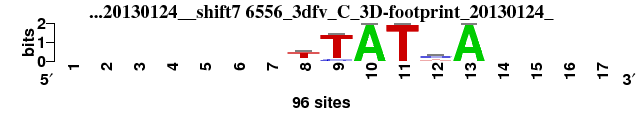 |
0.822 |
0.493 |
6.434 |
0.503 |
0.870 |
1.211 |
0.899 |
36 |
27 |
15 |
15 |
41 |
28 |
34 |
28.000 |
32 |
; positions_6nt_m1 versus 6556_3dfv_C_3D-footprint_20130124_; m=32/51; ncol2=6; w=6; offset=0; strand=D; shift=7; score= 28; -------tTATcA----
; cor=0.822; Ncor=0.493; logoDP=6.434; NIcor=0.503; NsEucl=0.870; SSD=1.211; NSW=0.899; rcor=36; rNcor=27; rlogoDP=15; rNIcor=15; rNsEucl=41; rSSD=28; rNSW=34; rank_mean=28.000; match_rank=32
a 0 0 0 0 0 0 0 12 0 96 0 10 96 0 0 0 0
c 0 0 0 0 0 0 0 10 11 0 0 53 0 0 0 0 0
g 0 0 0 0 0 0 0 10 0 0 0 10 0 0 0 0 0
t 0 0 0 0 0 0 0 64 85 0 96 23 0 0 0 0 0
|
| 2350_CN0187.1_JASPAR_CORE_2009__rc_shift1 (2350_CN0187.1_JASPAR_CORE_2009__rc) |
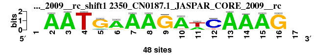 |
0.856 |
0.482 |
3.941 |
0.026 |
0.902 |
1.560 |
0.913 |
28 |
31 |
31 |
42 |
17 |
39 |
27 |
30.714 |
33 |
; positions_6nt_m1 versus 2350_CN0187.1_JASPAR_CORE_2009__rc; m=33/51; ncol2=15; w=9; offset=-6; strand=R; shift=1; score=30.7143; -AATGAAAGAwCAAAG-
; cor=0.856; Ncor=0.482; logoDP=3.941; NIcor=0.026; NsEucl=0.902; SSD=1.560; NSW=0.913; rcor=28; rNcor=31; rlogoDP=31; rNIcor=42; rNsEucl=17; rSSD=39; rNSW=27; rank_mean=30.714; match_rank=33
a 0 47 48 0 4 40 47 47 0 44 18 0 48 46 47 0 0
c 0 0 0 0 3 2 0 0 1 0 0 41 0 2 0 1 0
g 0 1 0 0 41 5 1 0 46 1 1 2 0 0 1 47 0
t 0 0 0 48 0 1 0 1 1 3 29 5 0 0 0 0 0
|
| 6753_6gat_A_3D-footprint_20130124__shift7 (6753_6gat_A_3D-footprint_20130124_) |
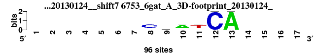 |
0.803 |
0.482 |
4.741 |
0.485 |
0.867 |
1.265 |
0.895 |
39 |
30 |
25 |
16 |
42 |
29 |
36 |
31.000 |
34 |
; positions_6nt_m1 versus 6753_6gat_A_3D-footprint_20130124_; m=34/51; ncol2=6; w=6; offset=0; strand=D; shift=7; score= 31; -------CnATCA----
; cor=0.803; Ncor=0.482; logoDP=4.741; NIcor=0.485; NsEucl=0.867; SSD=1.265; NSW=0.895; rcor=39; rNcor=30; rlogoDP=25; rNIcor=16; rNsEucl=42; rSSD=29; rNSW=36; rank_mean=31.000; match_rank=34
a 0 0 0 0 0 0 0 11 24 67 9 0 96 0 0 0 0
c 0 0 0 0 0 0 0 67 24 9 11 96 0 0 0 0 0
g 0 0 0 0 0 0 0 9 24 11 9 0 0 0 0 0 0
t 0 0 0 0 0 0 0 9 24 9 67 0 0 0 0 0 0
|
| 1493_MA0298.1_JASPAR_CORE_2009__shift7 (1493_MA0298.1_JASPAR_CORE_2009_) |
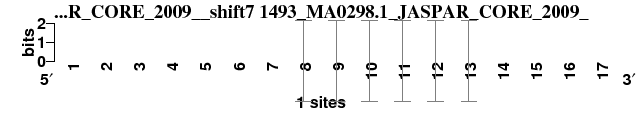 |
0.811 |
0.487 |
8.445 |
0.484 |
0.852 |
1.569 |
0.869 |
38 |
29 |
7 |
17 |
47 |
40 |
46 |
32.000 |
35 |
; positions_6nt_m1 versus 1493_MA0298.1_JASPAR_CORE_2009_; m=35/51; ncol2=6; w=6; offset=0; strand=D; shift=7; score= 32; -------CTATCA----
; cor=0.811; Ncor=0.487; logoDP=8.445; NIcor=0.484; NsEucl=0.852; SSD=1.569; NSW=0.869; rcor=38; rNcor=29; rlogoDP=7; rNIcor=17; rNsEucl=47; rSSD=40; rNSW=46; rank_mean=32.000; match_rank=35
a 0 0 0 0 0 0 0 0 0 1 0 0 1 0 0 0 0
c 0 0 0 0 0 0 0 1 0 0 0 1 0 0 0 0 0
g 0 0 0 0 0 0 0 0 0 0 0 0 0 0 0 0 0
t 0 0 0 0 0 0 0 0 1 0 1 0 0 0 0 0 0
|
| 5975_1akh_A_3D-footprint_20130124__rc_shift6 (5975_1akh_A_3D-footprint_20130124__rc) |
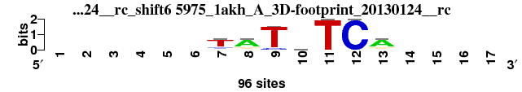 |
0.839 |
0.457 |
0.757 |
-0.041 |
0.879 |
1.061 |
0.912 |
31 |
35 |
45 |
44 |
34 |
16 |
28 |
33.286 |
36 |
; positions_6nt_m1 versus 5975_1akh_A_3D-footprint_20130124__rc; m=36/51; ncol2=7; w=6; offset=-1; strand=R; shift=6; score=33.2857; ------TATnTCA----
; cor=0.839; Ncor=0.457; logoDP=0.757; NIcor=-0.041; NsEucl=0.879; SSD=1.061; NSW=0.912; rcor=31; rNcor=35; rlogoDP=45; rNIcor=44; rNsEucl=34; rSSD=16; rNSW=28; rank_mean=33.286; match_rank=36
a 0 0 0 0 0 0 8 69 0 24 0 0 69 0 0 0 0
c 0 0 0 0 0 0 11 8 9 24 0 96 8 0 0 0 0
g 0 0 0 0 0 0 8 11 0 24 0 0 11 0 0 0 0
t 0 0 0 0 0 0 69 8 87 24 96 0 8 0 0 0 0
|
| 1960_PB0105.1_JASPAR_CORE_2009__shift3 (1960_PB0105.1_JASPAR_CORE_2009_) |
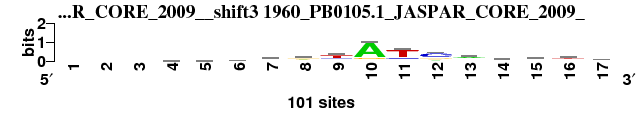 |
0.779 |
0.520 |
1.922 |
0.521 |
0.889 |
2.486 |
0.876 |
44 |
24 |
43 |
12 |
27 |
49 |
43 |
34.571 |
37 |
; positions_6nt_m1 versus 1960_PB0105.1_JASPAR_CORE_2009_; m=37/51; ncol2=15; w=10; offset=-4; strand=D; shift=3; score=34.5714; ---hmmvrtATcrdrty
; cor=0.779; Ncor=0.520; logoDP=1.922; NIcor=0.521; NsEucl=0.889; SSD=2.486; NSW=0.876; rcor=44; rNcor=24; rlogoDP=43; rNIcor=12; rNsEucl=27; rSSD=49; rNSW=43; rank_mean=34.571; match_rank=37
a 0 0 0 31 25 26 27 37 7 81 4 18 50 35 44 25 22
c 0 0 0 28 30 34 34 15 19 7 17 58 7 10 21 9 32
g 0 0 0 16 22 25 33 39 16 10 10 21 25 27 25 18 12
t 0 0 0 25 23 16 6 8 58 2 69 3 17 28 10 49 34
|
| 2219_CN0056.1_JASPAR_CORE_2009__shift2 (2219_CN0056.1_JASPAR_CORE_2009_) |
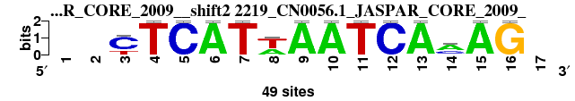 |
0.760 |
0.456 |
10.449 |
0.469 |
0.872 |
2.649 |
0.853 |
50 |
36 |
3 |
19 |
39 |
51 |
50 |
35.429 |
38 |
; positions_6nt_m1 versus 2219_CN0056.1_JASPAR_CORE_2009_; m=38/51; ncol2=14; w=9; offset=-5; strand=D; shift=2; score=35.4286; --YTCATwAATCAmAG-
; cor=0.760; Ncor=0.456; logoDP=10.449; NIcor=0.469; NsEucl=0.872; SSD=2.649; NSW=0.853; rcor=50; rNcor=36; rlogoDP=3; rNIcor=19; rNsEucl=39; rSSD=51; rNSW=50; rank_mean=35.429; match_rank=38
a 0 0 0 0 0 49 0 18 49 49 0 0 49 29 49 0 0
c 0 0 36 0 49 0 0 0 0 0 0 49 0 15 0 0 0
g 0 0 0 0 0 0 0 0 0 0 0 0 0 5 0 49 0
t 0 0 13 49 0 0 49 31 0 0 49 0 0 0 0 0 0
|
| 6070_1gau_A_3D-footprint_20130124__shift8 (6070_1gau_A_3D-footprint_20130124_) |
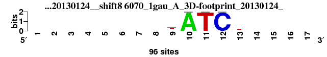 |
0.803 |
0.402 |
5.895 |
0.400 |
0.846 |
1.191 |
0.881 |
40 |
51 |
19 |
25 |
50 |
26 |
41 |
36.000 |
39 |
; positions_6nt_m1 versus 6070_1gau_A_3D-footprint_20130124_; m=39/51; ncol2=5; w=5; offset=1; strand=D; shift=8; score= 36; --------tATCt----
; cor=0.803; Ncor=0.402; logoDP=5.895; NIcor=0.400; NsEucl=0.846; SSD=1.191; NSW=0.881; rcor=40; rNcor=51; rlogoDP=19; rNIcor=25; rNsEucl=50; rSSD=26; rNSW=41; rank_mean=36.000; match_rank=39
a 0 0 0 0 0 0 0 0 13 96 0 0 13 0 0 0 0
c 0 0 0 0 0 0 0 0 13 0 0 96 16 0 0 0 0
g 0 0 0 0 0 0 0 0 13 0 0 0 13 0 0 0 0
t 0 0 0 0 0 0 0 0 57 0 96 0 54 0 0 0 0
|
| 2204_CN0041.1_JASPAR_CORE_2009__rc_shift0 (2204_CN0041.1_JASPAR_CORE_2009__rc) |
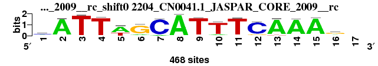 |
0.803 |
0.425 |
4.621 |
0.153 |
0.888 |
2.036 |
0.887 |
41 |
44 |
26 |
29 |
28 |
45 |
40 |
36.143 |
40 |
; positions_6nt_m1 versus 2204_CN0041.1_JASPAR_CORE_2009__rc; m=40/51; ncol2=16; w=9; offset=-7; strand=R; shift=0; score=36.1429; mATTwGCATTTCAAAg-
; cor=0.803; Ncor=0.425; logoDP=4.621; NIcor=0.153; NsEucl=0.888; SSD=2.036; NSW=0.887; rcor=41; rNcor=44; rlogoDP=26; rNIcor=29; rNsEucl=28; rSSD=45; rNSW=40; rank_mean=36.143; match_rank=40
a 165 438 5 6 290 67 33 465 18 47 5 14 435 437 445 108 0
c 197 11 2 15 1 19 430 3 4 5 13 406 9 7 2 37 0
g 47 6 0 1 9 373 0 0 4 15 8 38 1 16 8 254 0
t 59 13 461 446 168 9 5 0 442 401 442 10 23 8 13 69 0
|
| 7300_ARI3A_f1_HOCOMOCO_v9__shift9 (7300_ARI3A_f1_HOCOMOCO_v9_) |
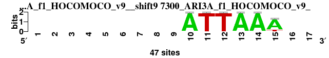 |
0.764 |
0.459 |
8.757 |
0.457 |
0.831 |
2.058 |
0.829 |
48 |
34 |
5 |
21 |
51 |
46 |
51 |
36.571 |
41 |
; positions_6nt_m1 versus 7300_ARI3A_f1_HOCOMOCO_v9_; m=41/51; ncol2=6; w=6; offset=2; strand=D; shift=9; score=36.5714; ---------ATTAAA--
; cor=0.764; Ncor=0.459; logoDP=8.757; NIcor=0.457; NsEucl=0.831; SSD=2.058; NSW=0.829; rcor=48; rNcor=34; rlogoDP=5; rNIcor=21; rNsEucl=51; rSSD=46; rNSW=51; rank_mean=36.571; match_rank=41
a 0 0 0 0 0 0 0 0 0 47 0 0 47 47 39 0 0
c 0 0 0 0 0 0 0 0 0 0 0 0 0 0 0 0 0
g 0 0 0 0 0 0 0 0 0 0 0 0 0 0 0 0 0
t 0 0 0 0 0 0 0 0 0 0 47 47 0 0 8 0 0
|
| 2563_MA0307.1_JASPAR_CORE_2009__rc_shift7 (2563_MA0307.1_JASPAR_CORE_2009__rc) |
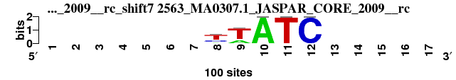 |
0.831 |
0.416 |
0.488 |
-0.142 |
0.862 |
0.952 |
0.905 |
33 |
45 |
46 |
49 |
44 |
14 |
32 |
37.571 |
42 |
; positions_6nt_m1 versus 2563_MA0307.1_JASPAR_CORE_2009__rc; m=42/51; ncol2=5; w=5; offset=0; strand=R; shift=7; score=37.5714; -------yWATC-----
; cor=0.831; Ncor=0.416; logoDP=0.488; NIcor=-0.142; NsEucl=0.862; SSD=0.952; NSW=0.905; rcor=33; rNcor=45; rlogoDP=46; rNIcor=49; rNsEucl=44; rSSD=14; rNSW=32; rank_mean=37.571; match_rank=42
a 0 0 0 0 0 0 0 12 26 100 0 0 0 0 0 0 0
c 0 0 0 0 0 0 0 27 0 0 0 100 0 0 0 0 0
g 0 0 0 0 0 0 0 0 0 0 0 0 0 0 0 0 0
t 0 0 0 0 0 0 0 61 74 0 100 0 0 0 0 0 0
|
| 6264_1puf_B_3D-footprint_20130124__rc_shift8 (6264_1puf_B_3D-footprint_20130124__rc) |
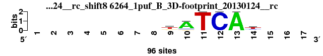 |
0.828 |
0.497 |
0.297 |
-0.103 |
0.867 |
1.282 |
0.893 |
34 |
26 |
49 |
47 |
43 |
30 |
37 |
38.000 |
43 |
; positions_6nt_m1 versus 6264_1puf_B_3D-footprint_20130124__rc; m=43/51; ncol2=6; w=6; offset=1; strand=R; shift=8; score= 38; --------tATCAt---
; cor=0.828; Ncor=0.497; logoDP=0.297; NIcor=-0.103; NsEucl=0.867; SSD=1.282; NSW=0.893; rcor=34; rNcor=26; rlogoDP=49; rNIcor=47; rNsEucl=43; rSSD=30; rNSW=37; rank_mean=38.000; match_rank=43
a 0 0 0 0 0 0 0 0 9 76 0 0 96 11 0 0 0
c 0 0 0 0 0 0 0 0 9 9 0 96 0 19 0 0 0
g 0 0 0 0 0 0 0 0 21 9 0 0 0 9 0 0 0
t 0 0 0 0 0 0 0 0 57 2 96 0 0 57 0 0 0
|
| 2249_CN0086.1_JASPAR_CORE_2009__rc_shift8 (2249_CN0086.1_JASPAR_CORE_2009__rc) |
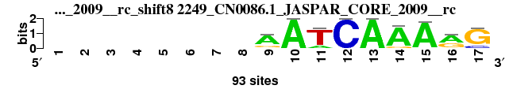 |
0.780 |
0.439 |
4.385 |
0.081 |
0.883 |
2.216 |
0.877 |
43 |
41 |
27 |
34 |
32 |
48 |
42 |
38.143 |
44 |
; positions_6nt_m1 versus 2249_CN0086.1_JASPAR_CORE_2009__rc; m=44/51; ncol2=15; w=9; offset=1; strand=R; shift=8; score=38.1429; --------AATCAAArG
; cor=0.780; Ncor=0.439; logoDP=4.385; NIcor=0.081; NsEucl=0.883; SSD=2.216; NSW=0.877; rcor=43; rNcor=41; rlogoDP=27; rNIcor=34; rNsEucl=32; rSSD=48; rNSW=42; rank_mean=38.143; match_rank=44
a 0 0 0 0 0 0 0 0 67 93 16 0 93 83 90 56 0
c 0 0 0 0 0 0 0 0 7 0 0 93 0 0 3 0 15
g 0 0 0 0 0 0 0 0 19 0 0 0 0 10 0 35 78
t 0 0 0 0 0 0 0 0 0 0 77 0 0 0 0 2 0
|
| 2820_PF0133.1_JASPAR_CORE_2009__rc_shift9 (2820_PF0133.1_JASPAR_CORE_2009__rc) |
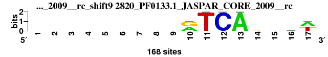 |
0.763 |
0.407 |
5.573 |
0.287 |
0.875 |
2.001 |
0.875 |
49 |
49 |
21 |
26 |
37 |
44 |
44 |
38.571 |
45 |
; positions_6nt_m1 versus 2820_PF0133.1_JASPAR_CORE_2009__rc; m=45/51; ncol2=13; w=8; offset=2; strand=R; shift=9; score=38.5714; ---------rTCArhmw
; cor=0.763; Ncor=0.407; logoDP=5.573; NIcor=0.287; NsEucl=0.875; SSD=2.001; NSW=0.875; rcor=49; rNcor=49; rlogoDP=21; rNIcor=26; rNsEucl=37; rSSD=44; rNSW=44; rank_mean=38.571; match_rank=45
a 0 0 0 0 0 0 0 0 0 75 0 0 168 71 58 43 85
c 0 0 0 0 0 0 0 0 0 0 0 168 0 39 48 53 0
g 0 0 0 0 0 0 0 0 0 93 0 0 0 53 19 35 0
t 0 0 0 0 0 0 0 0 0 0 168 0 0 5 43 37 83
|
| 5048_ZmHOX2a_2__Athamap_20091028__rc_shift6 (5048_ZmHOX2a_2__Athamap_20091028__rc) |
 |
0.825 |
0.450 |
0.314 |
-0.166 |
0.871 |
1.207 |
0.899 |
35 |
38 |
48 |
50 |
40 |
27 |
33 |
38.714 |
46 |
; positions_6nt_m1 versus 5048_ZmHOX2a_2__Athamap_20091028__rc; m=46/51; ncol2=7; w=6; offset=-1; strand=R; shift=6; score=38.7143; ------cmGATCa----
; cor=0.825; Ncor=0.450; logoDP=0.314; NIcor=-0.166; NsEucl=0.871; SSD=1.207; NSW=0.899; rcor=35; rNcor=38; rlogoDP=48; rNIcor=50; rNsEucl=40; rSSD=27; rNSW=33; rank_mean=38.714; match_rank=46
a 0 0 0 0 0 0 6 16 0 27 0 0 15 0 0 0 0
c 0 0 0 0 0 0 14 7 0 0 0 27 5 0 0 0 0
g 0 0 0 0 0 0 4 4 27 0 0 0 2 0 0 0 0
t 0 0 0 0 0 0 3 0 0 0 27 0 5 0 0 0 0
|
| 2431_MA0037.1_JASPAR_CORE_2009__rc_shift7 (2431_MA0037.1_JASPAR_CORE_2009__rc) |
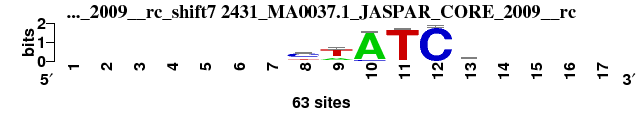 |
0.759 |
0.455 |
3.521 |
0.251 |
0.854 |
1.532 |
0.872 |
51 |
37 |
33 |
27 |
46 |
38 |
45 |
39.571 |
47 |
; positions_6nt_m1 versus 2431_MA0037.1_JASPAR_CORE_2009__rc; m=47/51; ncol2=6; w=6; offset=0; strand=R; shift=7; score=39.5714; -------cwATCw----
; cor=0.759; Ncor=0.455; logoDP=3.521; NIcor=0.251; NsEucl=0.854; SSD=1.532; NSW=0.872; rcor=51; rNcor=37; rlogoDP=33; rNIcor=27; rNsEucl=46; rSSD=38; rNSW=45; rank_mean=39.571; match_rank=47
a 0 0 0 0 0 0 0 8 19 58 1 0 20 0 0 0 0
c 0 0 0 0 0 0 0 37 4 5 1 62 4 0 0 0 0
g 0 0 0 0 0 0 0 3 1 0 0 1 14 0 0 0 0
t 0 0 0 0 0 0 0 15 39 0 61 0 25 0 0 0 0
|
| 1793_MA0235.1_JASPAR_CORE_2009__rc_shift7 (1793_MA0235.1_JASPAR_CORE_2009__rc) |
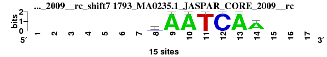 |
0.779 |
0.545 |
0.856 |
-0.117 |
0.861 |
1.896 |
0.865 |
45 |
14 |
44 |
48 |
45 |
43 |
47 |
40.857 |
48 |
; positions_6nt_m1 versus 1793_MA0235.1_JASPAR_CORE_2009__rc; m=48/51; ncol2=7; w=7; offset=0; strand=R; shift=7; score=40.8571; -------hAATCAA---
; cor=0.779; Ncor=0.545; logoDP=0.856; NIcor=-0.117; NsEucl=0.861; SSD=1.896; NSW=0.865; rcor=45; rNcor=14; rlogoDP=44; rNIcor=48; rNsEucl=45; rSSD=43; rNSW=47; rank_mean=40.857; match_rank=48
a 0 0 0 0 0 0 0 6 15 15 0 0 15 12 0 0 0
c 0 0 0 0 0 0 0 4 0 0 0 15 0 0 0 0 0
g 0 0 0 0 0 0 0 0 0 0 0 0 0 2 0 0 0
t 0 0 0 0 0 0 0 5 0 0 15 0 0 1 0 0 0
|
| 2430_MA0036.1_JASPAR_CORE_2009__rc_shift8 (2430_MA0036.1_JASPAR_CORE_2009__rc) |
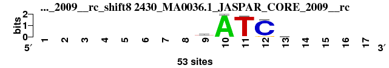 |
0.814 |
0.407 |
0.110 |
-0.082 |
0.851 |
1.115 |
0.889 |
37 |
48 |
50 |
46 |
48 |
21 |
39 |
41.286 |
49 |
; positions_6nt_m1 versus 2430_MA0036.1_JASPAR_CORE_2009__rc; m=49/51; ncol2=5; w=5; offset=1; strand=R; shift=8; score=41.2857; --------yATCc----
; cor=0.814; Ncor=0.407; logoDP=0.110; NIcor=-0.082; NsEucl=0.851; SSD=1.115; NSW=0.889; rcor=37; rNcor=48; rlogoDP=50; rNIcor=46; rNsEucl=48; rSSD=21; rNSW=39; rank_mean=41.286; match_rank=49
a 0 0 0 0 0 0 0 0 6 53 0 0 9 0 0 0 0
c 0 0 0 0 0 0 0 0 15 0 1 48 18 0 0 0 0
g 0 0 0 0 0 0 0 0 7 0 0 5 13 0 0 0 0
t 0 0 0 0 0 0 0 0 25 0 52 0 13 0 0 0 0
|
| 1763_MA0204.1_JASPAR_CORE_2009__rc_shift7 (1763_MA0204.1_JASPAR_CORE_2009__rc) |
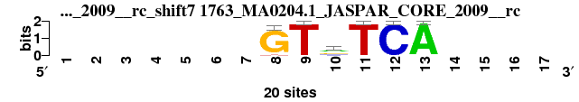 |
0.778 |
0.467 |
2.561 |
0.025 |
0.849 |
1.631 |
0.864 |
46 |
33 |
39 |
43 |
49 |
41 |
48 |
42.714 |
50 |
; positions_6nt_m1 versus 1763_MA0204.1_JASPAR_CORE_2009__rc; m=50/51; ncol2=6; w=6; offset=0; strand=R; shift=7; score=42.7143; -------GTrTCA----
; cor=0.778; Ncor=0.467; logoDP=2.561; NIcor=0.025; NsEucl=0.849; SSD=1.631; NSW=0.864; rcor=46; rNcor=33; rlogoDP=39; rNIcor=43; rNsEucl=49; rSSD=41; rNSW=48; rank_mean=42.714; match_rank=50
a 0 0 0 0 0 0 0 0 0 9 0 0 20 0 0 0 0
c 0 0 0 0 0 0 0 0 0 4 0 20 0 0 0 0 0
g 0 0 0 0 0 0 0 19 0 7 0 0 0 0 0 0 0
t 0 0 0 0 0 0 0 1 20 0 20 0 0 0 0 0 0
|
| 2193_CN0030.1_JASPAR_CORE_2009__rc_shift1 (2193_CN0030.1_JASPAR_CORE_2009__rc) |
|
0.775 |
0.436 |
3.223 |
0.043 |
0.874 |
2.553 |
0.858 |
47 |
43 |
38 |
39 |
38 |
50 |
49 |
43.429 |
51 |
; positions_6nt_m1 versus 2193_CN0030.1_JASPAR_CORE_2009__rc; m=51/51; ncol2=15; w=9; offset=-6; strand=R; shift=1; score=43.4286; -wTTGACATTTCAAAG-
; cor=0.775; Ncor=0.436; logoDP=3.223; NIcor=0.043; NsEucl=0.874; SSD=2.553; NSW=0.858; rcor=47; rNcor=43; rlogoDP=38; rNIcor=39; rNsEucl=38; rSSD=50; rNSW=49; rank_mean=43.429; match_rank=51
a 0 63 8 0 8 141 5 153 0 0 0 0 144 139 143 17 0
c 0 20 10 0 0 0 148 0 0 0 0 153 5 11 0 0 0
g 0 8 29 0 129 12 0 0 0 0 0 0 0 2 10 121 0
t 0 62 106 153 16 0 0 0 153 153 153 0 4 1 0 15 0
|
{kind=link}
{kind=link}
{kind=link}
{kind=link}
{kind=link}
{kind=link}
{kind=link}
{kind=link}
{kind=link}
{kind=link}
{kind=link}
{kind=link}
{kind=link}
{kind=link}
{kind=link}
{kind=link}
{kind=link}
{kind=link}
{kind=link}
{kind=link}
{kind=link}
{kind=link}
{kind=link}
{kind=link}
{kind=link}
{kind=link}
{kind=link}
{kind=link}
{kind=link}
{kind=link}
{kind=link}
{kind=link}
{kind=link}
{kind=link}
{kind=link}
{kind=link}
{kind=link}
{kind=link}
{kind=link}
{kind=link}
{kind=link}
{kind=link}
{kind=link}
{kind=link}
{kind=link}
{kind=link}
{kind=link}
{kind=link}
{kind=link}
{kind=link}
{kind=link}